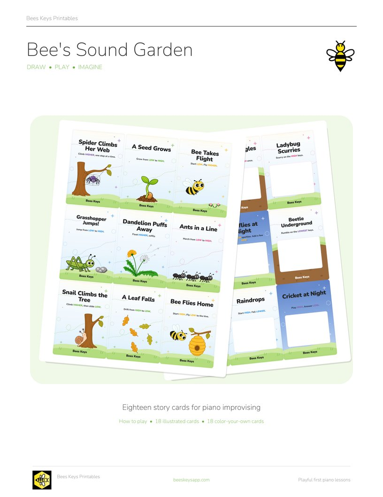
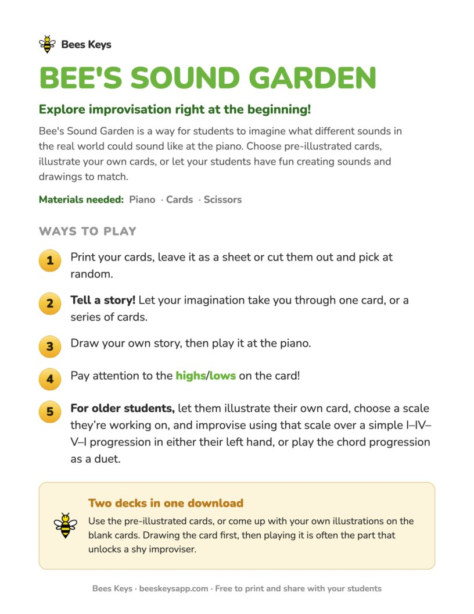
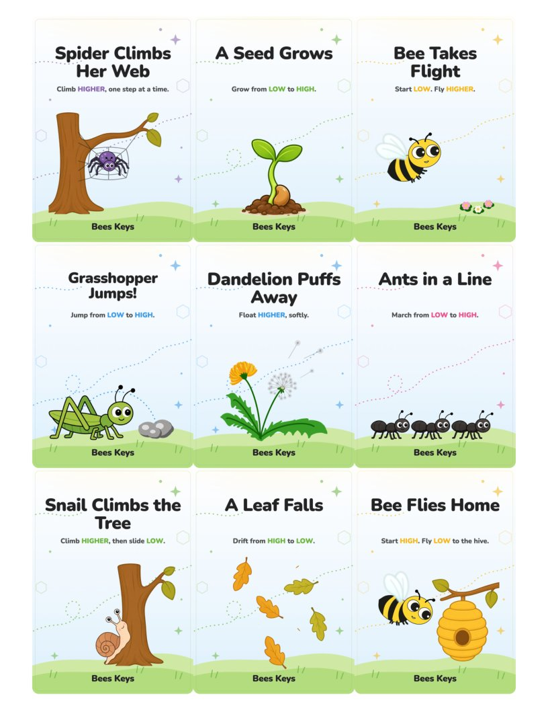
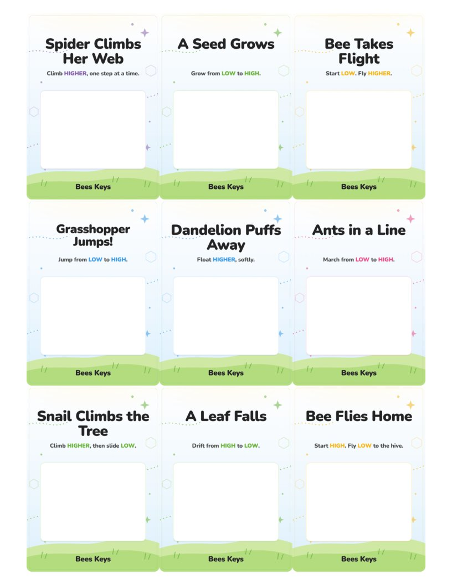
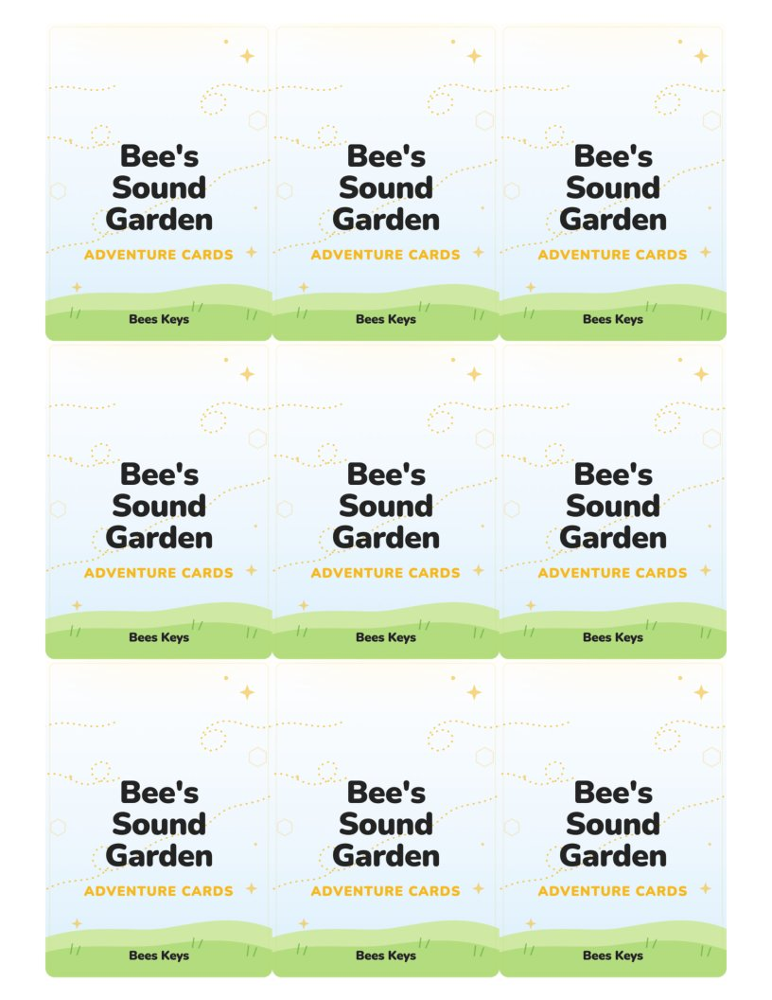

Free printable
Bee’s Sound Garden: Piano Improv Cards
Published September 18, 2026

Click to download the free PDFExplore improvisation right at the beginning!
Bee’s Sound Garden is a way for students to imagine what different sounds in the real world could sound like at the piano. Choose pre-illustrated cards, illustrate your own cards, or let your students have fun creating sounds and drawings to match.
Download the free printable
-

How to play All five ways to play on one page. Keep it with the deck. -

18 illustrated cards A garden creature and one short line giving the shape of the sound. Nine to a page. -

18 color-your-own cards The same eighteen cards with the picture left blank, so students draw their own garden. -

Card backs Printed on the reverse of each card page, so the deck shuffles face down like a real one.
Ways to play
- Print your cards, leave it as a sheet or cut them out and pick at random.
- Tell a story! Let your imagination take you through one card, or a series of cards.
- Draw your own story, then play it at the piano.
- Pay attention to the highs/lows on the card!
- For older students, let them illustrate their own card, choose a scale they’re working on, and improvise using that scale over a simple I–IV–V–I progression in either their left hand, or play the chord progression as a duet.
Two decks in one download 🎨
Use the pre-illustrated cards, or come up with your own illustrations on the blank cards. Drawing the card first, then playing it is often the part that unlocks a shy improviser.
Printing and cutting
If you want a deck, print double-sided, flipped on the long edge: each page of card backs is followed by its page of card fronts, so a duplex print lines them up, and the deck shuffles face down like a real one. Card stock holds up best.
Why improvising this early? 🐝
Most early piano lessons are about getting things correct: key names, finger numbers, rhythms, and so on. But creating the spark for students to want to make and interpret their own music is the whole point for me. Sometimes it’s hard to know where to start with making your own music, and these cards are meant to help jump start that creative spark!
Want more free music teaching resources?
I'm making more printables, games, and teaching resources. Send me a note and I'll pass new freebies your way.
Free · unsubscribe any time Send me new freebies
Opens your mail app. Your address is only ever used to send you the free resources.